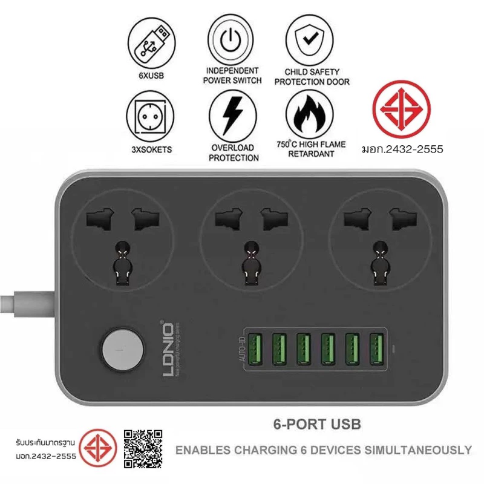

1LDNIO SC3604 Power Strip 3 AC + 6 USB
ราคา Shopee: 319 บาท
คุ้มที่สุดในกลุ่ม ให้ทั้งเต้าเสียบ AC 3 ช่อง และ USB มากถึง 6 ช่อง (5V/3.4A อัตโนมัติ) รับกำลังไฟสูงสุด 2500W มีระบบป้องกันไฟเกินและความร้อนเกิน วัสดุทนไฟลามได้ถึง 750°C เหมาะเป็นปลั๊กหลักบนโต๊ะทำงานที่มีทั้งเครื่องใช้ไฟฟ้าและอุปกรณ์ชาร์จมือถือ
- ช่องเสียบAC 3 ช่อง + USB 6 ช่อง
- กำลังไฟสูงสุด2500W (250V/10A)
- USB Output5V/3.4A อัตโนมัติ รวม 17W
- ความยาวสาย2 เมตร
- ระบบป้องกันป้องกันไฟเกิน/ความร้อนเกิน ทนไฟลาม 750°C
ข้อดี
- USB มากถึง 6 ช่อง พอสำหรับชาร์จหลายอุปกรณ์พร้อมกัน
- กำลังไฟสูงสุด 2500W สูงกว่ามาตรฐานทั่วไป
- มีระบบป้องกันไฟเกินและความร้อนเกิน
- LDNIO แบรนด์มีชื่อเสียงด้านอุปกรณ์ชาร์จ
ข้อเสีย
- เต้าเสียบ AC มีแค่ 3 ช่อง ถ้าต้องเสียบเครื่องใช้ไฟฟ้าเยอะอาจไม่พอ
- ไม่มี USB-C PD สำหรับชาร์จเร็ว Notebook
เหมาะสำหรับ: คนมีอุปกรณ์ชาร์จหลายชิ้น (มือถือ, หูฟัง, พาวเวอร์แบงค์) อยากได้ USB เยอะในปลั๊กเดียว
ดูราคาล่าสุดบน Shopee →